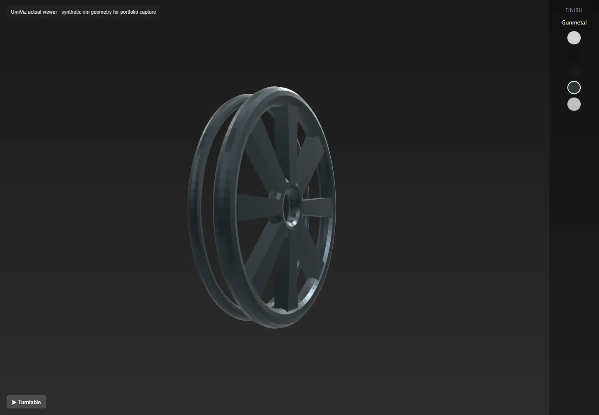

UmiViz
Embeddable 3D wheel-rim viewer with finish selection.

The idea
UmiViz asks how much of a physical-product showroom can fit into a small embedded web viewer. The documented target was a wheel-rim configurator: choose an OBJ model, select Chrome, Matte Black, Gunmetal or another finish, then inspect it from any angle without installing software. The learning opportunity was practical browser graphics rather than a large app framework: model loading, physically based materials, lighting, camera controls, asset serving and a simple surrounding interface. Later phases were meant to add a model selector and embed integration; the surviving work is primarily the viewer and server foundation.

How it works
Register an OBJ filename in the model manifest and serve it from the project's model directory.
Open viewer.html with a model query parameter and optionally a finish parameter. The camera computes a fit from the loaded geometry's bounding box.
Drag to orbit, scroll to zoom and use the right mouse button to pan. Click a finish swatch to update the material in place.
Use the lower-left Turntable button to start or stop auto-rotation. The local portfolio capture uses a synthetic rim shape, not an owned/customer product asset.
Inside the build
PBR needs an environment to reflect
The viewer uses MeshStandardMaterial with separate color, metalness and roughness values for five finishes. A RoomEnvironment is converted through PMREMGenerator and assigned to the scene before the OBJ loads. That setup gives reflective materials something meaningful to reflect. The documented decision is more informative than a generic claim of using Three.js: the project explicitly identified the environment map as necessary for the metallic appearance.
One renderer, multiple product surfaces
OBJLoader returns a group rather than one mesh, so finish updates traverse child meshes. OrbitControls supplies damping and optional auto-rotation, while setAnimationLoop keeps rendering and control updates synchronized. Box3-based camera fitting avoids assuming whether an uploaded model uses millimeters, centimeters or inches. A transparent canvas lets the CSS gradient remain the visual background.
Serving models is part of the design
The Express route reads a manifest and checks path containment, the .obj extension and manifest membership before returning a file. The renderer and API are separate development processes. For this capture, an isolated Vite proxy explicitly rewrites the viewer's /models request to the implemented /api/models route; this capture adapter is documented rather than presented as proof the original default integration was complete.
What I learned
Material parameters and light must work together
This is a useful study in the difference between painting an object gray and making a metal finish readable. Roughness, metalness, environment reflections and a controlled background all affect the result. The synthetic geometry in these screenshots has simple faceted normals, so it tests the original renderer and controls without pretending to be a finished photoreal product model.
A small component still has integration boundaries
URL parameters, loading states, camera fitting, file allowlists and parent-site embedding make a viewer more than a rotating mesh. Each is a concrete learning topic visible in source. The unfinished selector and embed phases are worth mentioning because they explain the gap between a working viewer and a complete configurator.
Test assets and real product assets have different roles
A reproducible synthetic OBJ is enough to exercise loading, finish switching and rotation. It does not establish ownership of a particular wheel design or demonstrate customer adoption. Keeping that boundary explicit makes the technical learning story stronger and easier to verify.